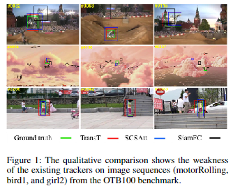

Md Maklachur Rahman
Texas A&M University (TAMU)
Email: maklachur [at] gmail [dot] com OR maklachur [at] tamu [dot] edu
I am Md Maklachur Rahman, a CS PhD student at TAMU, College Station, USA. Before joining to PhD, I worked as a Researcher for CSET and primarily for Virtual Reality Lab (VR Lab) at the School of Computer Science and Engineering at Kyungpook National University (KNU). I completed my MS under VR Lab as a Research Assistant. Formerly, I worked as a Software Engineer at Samsung R&D Institute Bangladesh for about three years. However, I have completed undergraduate studies at the Department of Computer Science and Engineering at Chittagong University of Engineering & Technology (CUET). I am always enthralled by computer science fundamentals and am interested in using deep learning frameworks to solve computer vision problems to improve the quality of life. My research focuses on developing real-time Visual Object Tracking frameworks with potential applications in autonomous vehicles, intelligent surveillance, augmented reality, and medical image analysis. Additionally, I am also involved in developing a community tool that uses machine learning-based Semantic Segmentation for labeling outcrop images. Ultimately, this tool aims to expose geoscience students to computer science and help them explore new geological environments, such as Mars.
Education
- PhD, Department of Computer Science and Engineering, Texas A&M University, USA (January 2022 - Present) Qualifying Exam: Passed with 99th Percentile [link]
- MS, School of Computer Science and Engineering, Kyungpook National University, South Korea (September 2018 - August 2020) Thesis: Siamese Stacked Channel-Spatial Attention Learning for Visual Tracking
- BS, Department of Computer Science and Engineering, Chittagong University of Engineering & Technology, Bangladesh (March 2009 - September 2013) Merit Position: 7th (out of 58)
Supervisor: Dr. Soon Ki Jung
Award: Outstanding Thesis Award
Thesis: Digital Watermarking for Image Authentication Based on Combined DCT, DWT and SVD Transformation
Supervisor: Dr. Muhammad Ibrahim Khan
Research Experience
- Graduate Research Assistant, Sketch Recognition Lab at TAMU (January 2022 - Present)
- Researcher, Center for Embedded Software Technology at KNU (September 2021 - December 2021)
- Researcher, Virtual Reality Laboratory at KNU (September 2020 - August 2021)
- Research Assistant, Virtual Reality Laboratory at KNU (August 2018 - August 2020)
Industry Experience
- Software Engineer, Samsung R&D Institute Bangladesh (October 2013 - July 2016)
- Industrial Attachment Training, Sentinel Solutions Ltd. Dhaka, Bangladesh (November 2012 - December 2012)
Publications
|  |
|

|
|
|
|
|

|
|
|
|
|

|
|

|
|
|

|
|
Projects(Selected)
- Siamese network for single object tracking Language or Tools: Python, PyTorch
- LSTM network for visual object tracking Language or Tools: Python, TensorFlow
- SWC/DMC Project Test Suite and IoT Test FW Development Language or Tools: C, C++, and Java
- Tizen IDE Verification and Automation Language or Tools: C, C++, and Java
- Digital image watermarking using multiple transformation model Language or Tools: Matlab
- Multi-portion Image Encryption using RSA Algorithm Language or Tools: Matlab
- Location Based Reminder System Using GPS Language or Tools: Android, Google map
- Mobile Phone Booth Customer Care Management Simulator Language or Tools: Java, Oracle
Research Interests
- Visual Object Tracking and Segmentation
- Computer Vision
- Machine Learning
- Deep Learning
- Visual Question Answering
- Activity Recognition and Localization
- Scene Understanding and Generation
- Multi-Modal AI
- Medical Image Analysis and Segmentation
Awards and Scholarships
- AAAI Travel Award, 38th AAAI 24, Vancouver, Canada
- CSE THESIS AWARD-2020, [Master's Thesis], Kyungpook National University, South Korea [Prize Money: 750000 KRW] [Certificate]
- Best Student Paper Award, 26th IW-FCV2020, Japan [Certificate]
- Brain Korea (BK) 21 PLUS Scholarship, Duration: Sept. 2018 – Aug. 2020, South Korea
- KNU International Graduate Scholarship (KINGS) [Full], Duration: Sept. 2018 – Aug. 2020, South Korea
- University Merit Scholarship, Duration: Mar. 2009 - Sept. 2013, CUET, Bangladesh
Journal and Conference Reviewer
- Neurocomputing [Journal]
- Pattern Recognition Letters [Journal]
- EEE Access [Journal]
- MDPI: Electronics, Entropy [Journal]
- Displays [Journal]
- Computers in Human Behavior [Journal]
- Pattern Recognition [Journal]
- Graphics Interface 2023 Conference